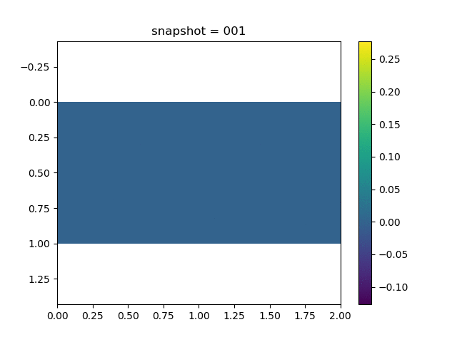
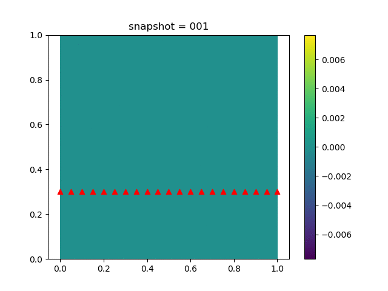
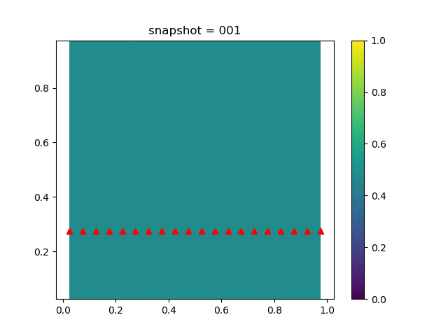
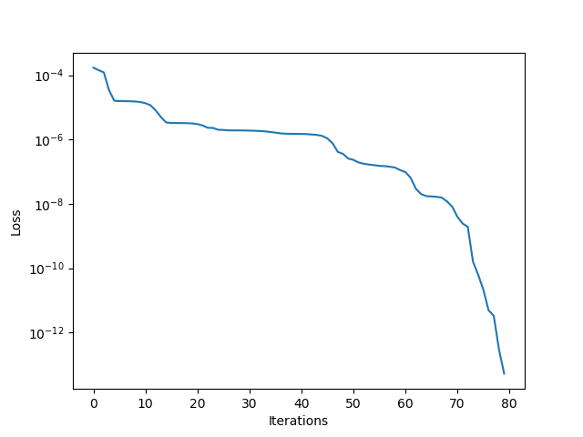

Inverse Modeling for Coupled Geomechanics and Single Phase Flow
We have coupled geomechanics and single phase flow in Coupled Geomechanics and Single Phase Flow (poroelasticity). The governing equation for poroelasticity model is
\[\begin{aligned}
\mathrm{div}\sigma(u) - b \nabla p &= 0\\
\frac{1}{M} \frac{\partial p}{\partial t} + b\frac{\partial \varepsilon_v(u)}{\partial t} - \nabla\cdot\left(\frac{k}{B_f\mu}\nabla p\right) &= f(x,t)\\
\sigma(u) = H\varepsilon(u)
\end{aligned}\]
We impose no-flow boundary condition for $p$, i.e., $\nabla p \cdot n=0$, a fixed Dirichlet boundary condition for $u$ on the bottom, and traction free boundary conditions for $u$ on all other three sides, i.e., $\sigma(u)n = 0$. We show the data in the following.
| u displacement | v displacement | Pressure |
|---|---|---|
|  |  |  |
We estimate the elasticity tensor $H$ by solving a minimization problem
\[\min_H \sum_{i\in\mathcal{I}} (u^{\mathrm{obs}}_i-u_i)^2\]
where $\mathcal{I}$ is the index set for horizontal displacement on the top side, $u^{\mathrm{obs}}_i$ is the corresponding observation. code

| Initial Guess | Estimated $H$ | Reference $H$ |
|---|---|---|
| $\begin{bmatrix}1 & 0 & 0 \\ 0 & 1 & 0 \\ 0 & 0 & 1\\\end{bmatrix}$ | $\begin{bmatrix}1.13962 & 0.398865 & -9.63291\times 10^{-6}\\ 0.398834 & 1.13959 & 8.32611\times 10^{-5}\\ -1.72994\times 10^{-4} & 1.67993\times 10^{-4} & 0.740734\end{bmatrix}$ | $\begin{bmatrix}1.1396 & 0.39886 & 0.0 \\ 0.39886 & 1.1396 & 0.0 \\ 0.0 & 0.0 & 0.740741\\\end{bmatrix}$ |